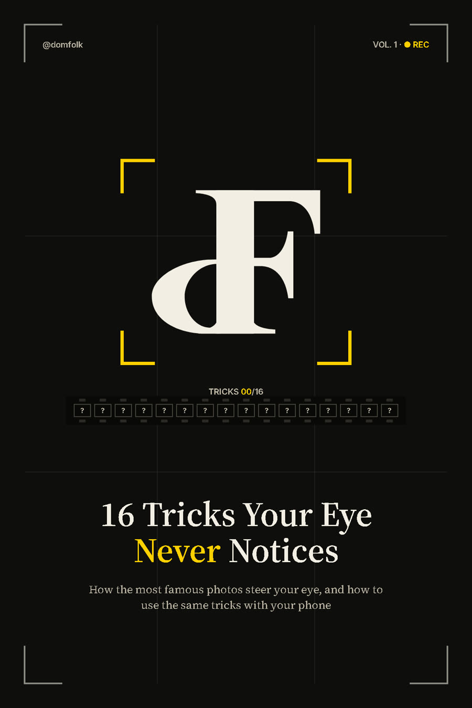
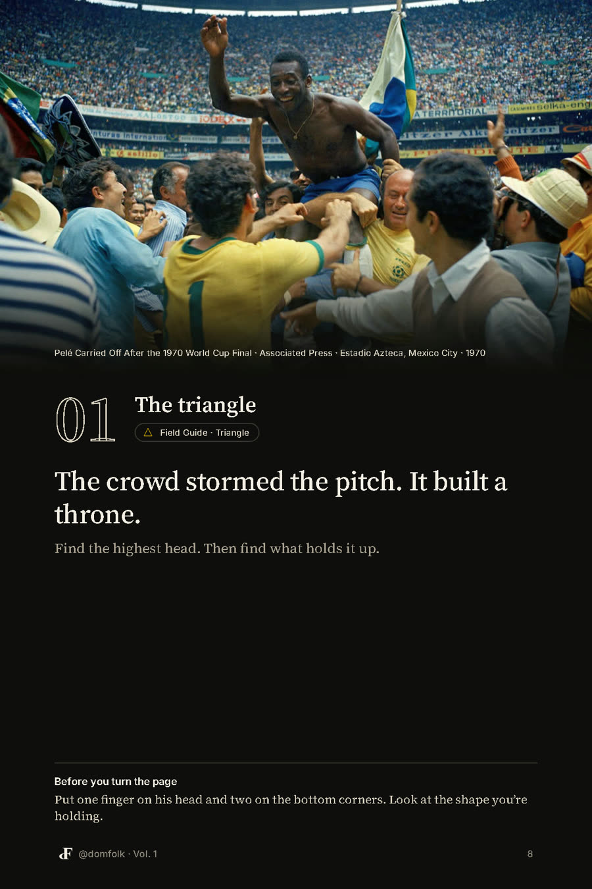
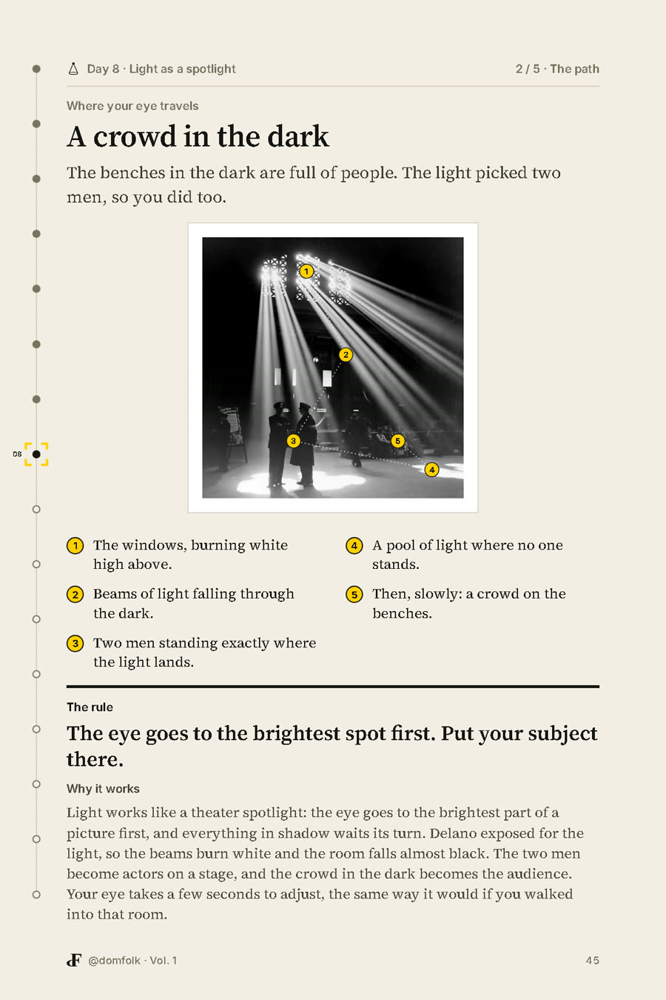
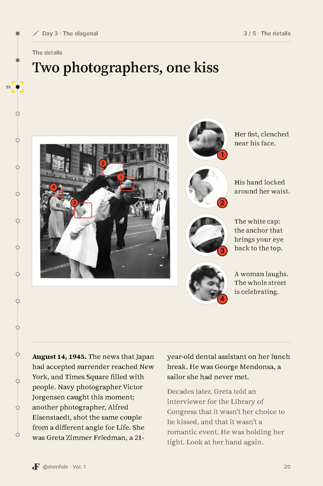
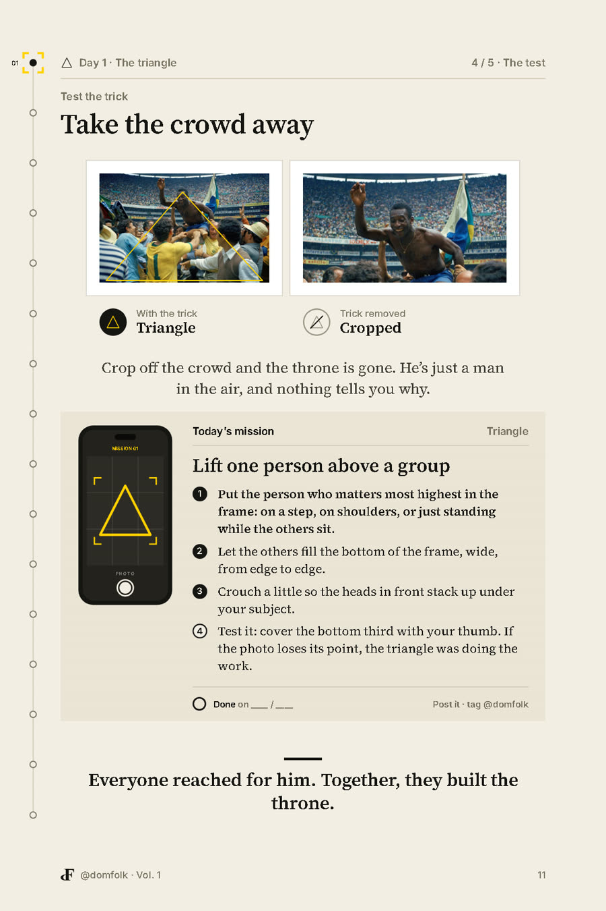
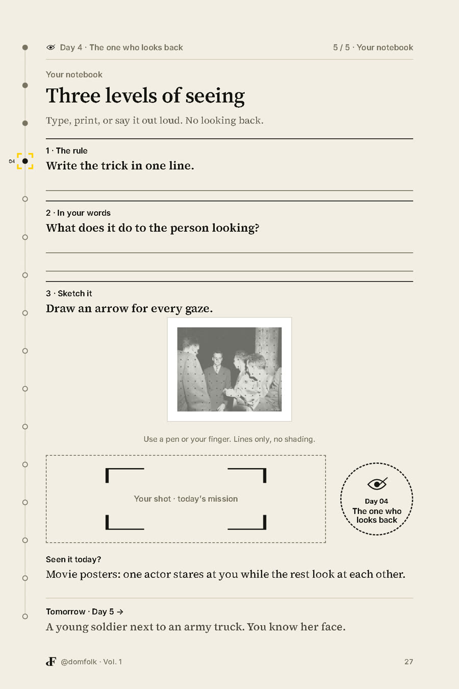
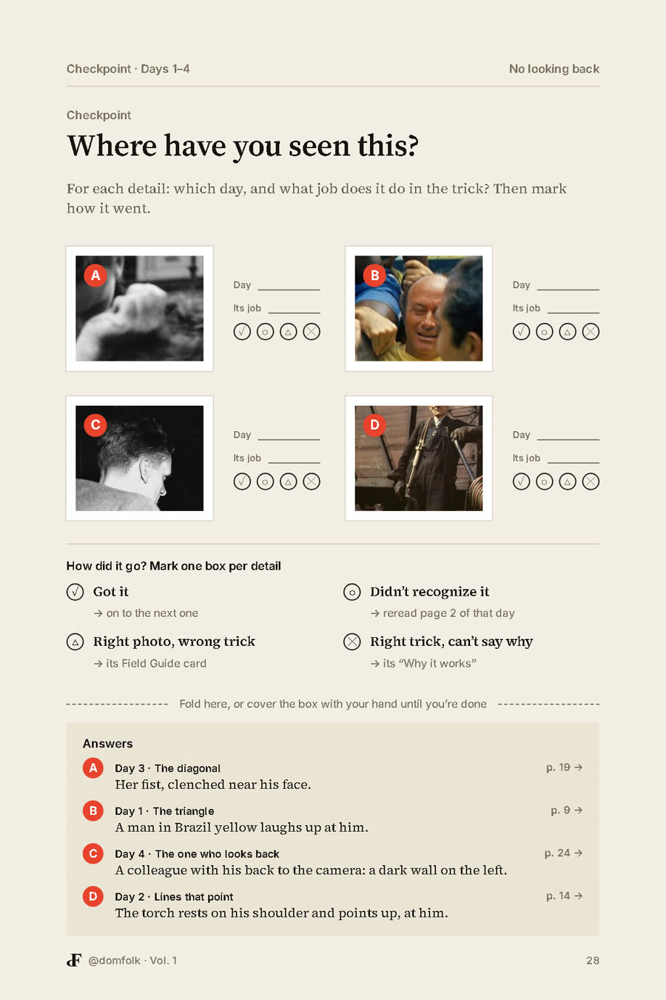
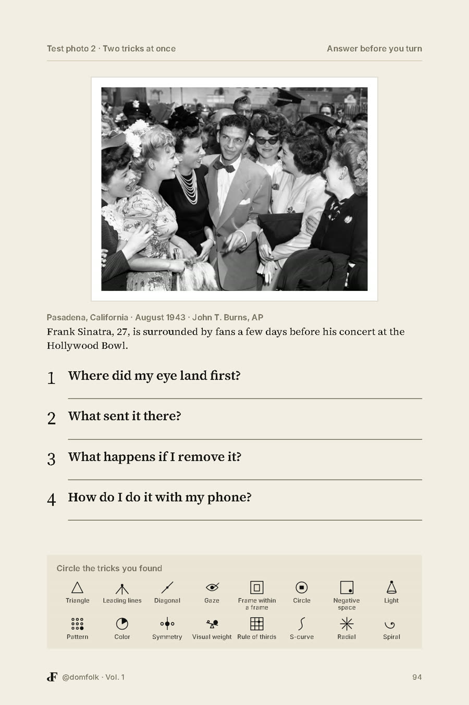
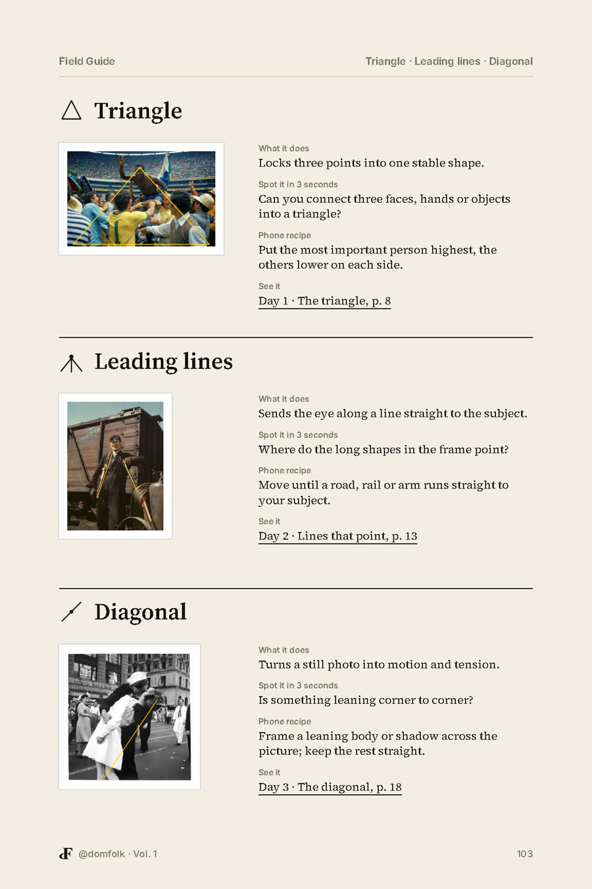

A 16-day photo book by @domfolk
How the most famous photos steer your eye, and how to use the same tricks with your phone.
Get the bookInstant PDF download · Phone, tablet or computer · Secure checkout by Gumroad

Before you scroll on
Think of the last photo that stopped your thumb. You think you chose where to look. You didn't. A photographer did.
Sometimes a hundred years ago, with tricks so simple nobody notices them: a line, a shadow, a color, a face that looks back. This book shows you all sixteen, one a day. Once you see them, you can't stop seeing them.
What one day looks like
Every day follows the same path, so you always know where you are.





Swipe →
The 16 days
More than reading



How you'll read it
A 6×9 in PDF, 112 pages. Opens on any phone, tablet or computer.
Every line, box and score can be typed in with the free Adobe Acrobat Reader app. Some readers, like Apple Books, show the pages but won't let you type.
Every exercise also works on paper: print the pages and answer with a pen, or just answer out loud.
Questions
It's for anyone who looks at photos, which is everyone. You don't need to know any photography terms; every trick is explained with one famous picture and tested with your phone.
No. Every mission is designed for the phone in your pocket.
Right after checkout, Gumroad gives you the download link and emails it to you. You can download it again any time from that email.
Yes. All 19 photographs in the book are real archive photos, credited, with sources listed for every fact. Nothing is AI-generated, including the cover.
Yes, with the free Adobe Acrobat Reader app. Apple Books will show the pages but won't let you type, so use Acrobat, paper, or answer out loud.
Send a DM to @domfolk on Instagram.
Instant PDF download · Secure checkout by Gumroad